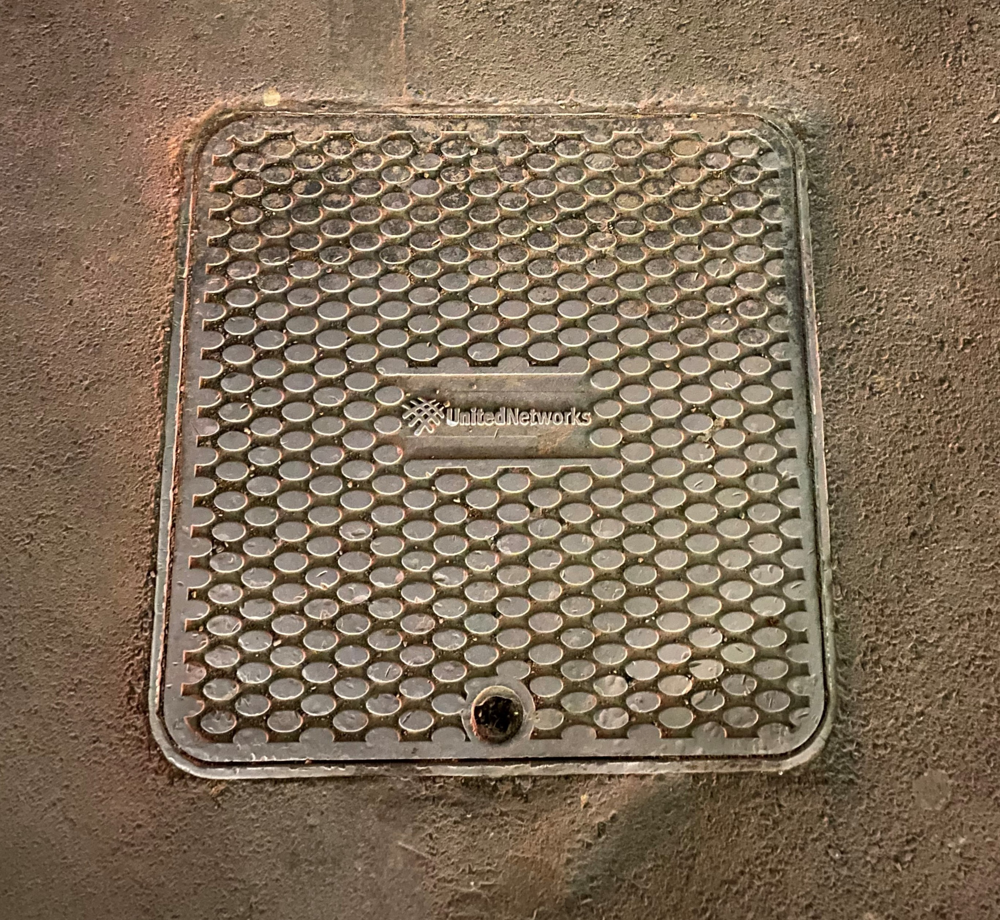

Satellite Dishes are dish shaped antennas. They receive and transmit informations through radio waves from a satellite. These seen around in New Zealand are assumed to be installed when Sky TV began.
It is specifically designed to receive signal waves from TV stations for your TV. The photo in the left is built outdoors instead of indoors which is more costly than indoor antennas but have greater reception.

Handholes we often see on footpaths are commonly lids for a box buried underneath. In these boxes are where microducts and cables can be joined. There are many around the city from different companies such as Chorus, United Networks, Saturn etc.
Cables are probably crucial to every single electronic device and for the internet to work wireless we still need cables running at the core of the system. Most commonly known Ethernet cables are used for the internet to receive and transmit information between devices. There are also Coaxial Cables and HDMI cables too.